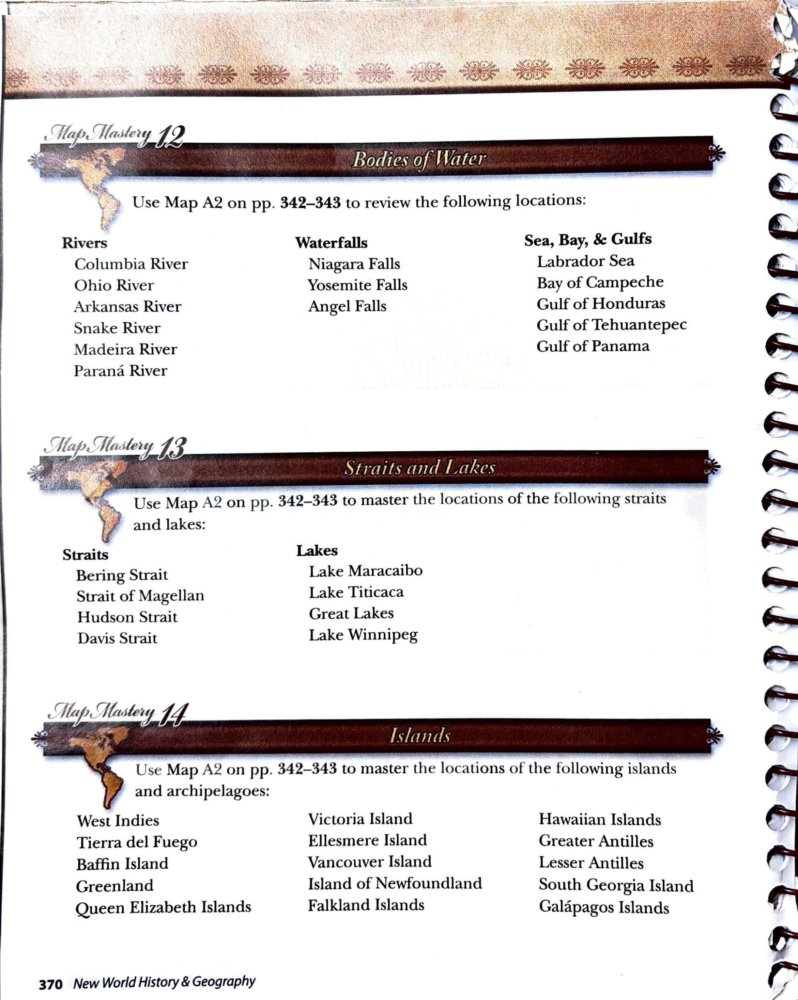

Map Mastery 12 · Bodies of Water
Map Mastery 12 · Bodies of Water
Use Map A2 on pp. 342–343 to review the following locations:
Rivers
- Columbia River
- Ohio River
- Arkansas River
- Snake River
- Madeira River
- Paraná River
Waterfalls
- Niagara Falls
- Yosemite Falls
- Angel Falls
Sea, Bay, & Gulfs
- Labrador Sea
- Bay of Campeche
- Gulf of Honduras
- Gulf of Tehuantepec
- Gulf of Panama
Multiple-choice practice
Use the study list and linked Atlas map to choose your answers. These questions are an adaptation for Harlan; they are not printed questions from the source.
Original source page 370
Location names, headings and instructions were compared with the supplied source page. Source-era classifications are preserved. Pronunciation-guide glyphs remain in the original image and are not transcribed into the list.
Open full-size source page